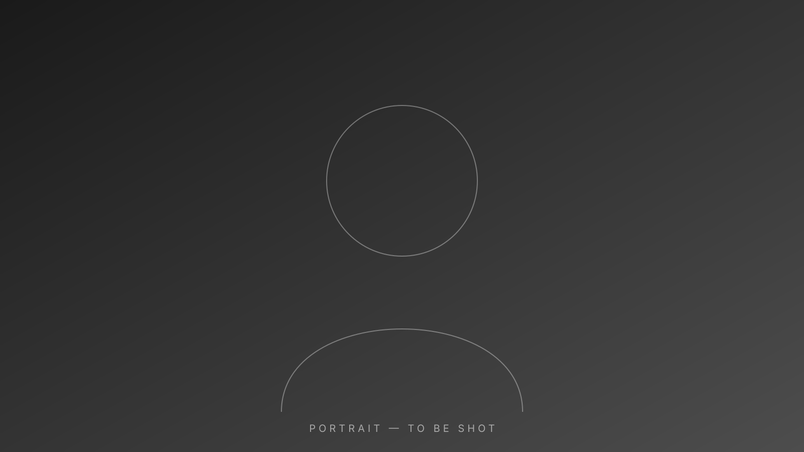

july updates, 7·26·26, beijing:
[ first short life update goes here — two or three sentences about what this month actually felt like ]
[ second short life update goes here — what changed since the last time you wrote one of these ]

i'm manuel (戴鸿哲), a grad student at Tsinghua trying to do research (and mostly failing), learning film one roll at a time, and getting humbled on the mats as often as i can.
previous stuff i did
- founding data engineer at an insurtech (Ebel)
- ML pipelines for steel (Ternium) and banking (Santander, ~365k hours/year saved)
- environmental data for the State of Nuevo León
- BI & people analytics at Grupo DeAcero
- two SCOPUS papers on logistics optimization with Prof. Fernando Elizalde Ramírez (ITESM)
_
_{*}_
\|/
.--. | .--.
( ·· ) | ( ·· )
`--' | `--'
\ | /
.--. \ | / .--.
( ·· ) \ |/ ( ·· )
`--' | `--'
|
_______|_______
|_______________|
current thoughts
july 26th, 2026, beijing
[ one sentence about jiu-jitsu — probably something i got wrong on the mats this week ]
july 19th, 2026, beijing
[ one sentence about film — what the current roll is teaching me ]
july 12th, 2026, beijing
[ one sentence about research failing — and why that's the point ]
questions
ask me anything — i usually respond day of.
[ a question someone actually asked ]
[ the answer i gave, one or two sentences ]
[ another question someone actually asked ]
[ the answer i gave, one or two sentences ]